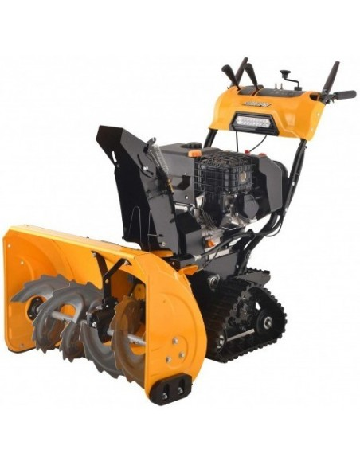

Benzininis sniego valytuvas HECHT 8616 - AivaShop.lt Sniego valytuvai skirstomi į vienpakopius ir dvipakopius. Pirmieji yra skirti nesudėtingiems namų ūkio darbams, pavyzdžiui, nedideliems kiemams, takeliams pravalyti. Vienpakopis sniego valytuvas yra nesudėtingos konstrukcijos įrenginys, bet jo visiškai pakaks sniegui aplink namus nuvalyti.
Sniego valytuvai | Ratiniai gaminiai | Elektroninė parduotuvė Sniego valytuvai ir sniego pūstuvai – tai įrenginiai, atliekantys sniego valymo darbus už Jus bei padedantys sutaupyti daug jėgų ir laiko. Benzininiai valytuvai labiau tinka dideliems, sunkaus sumindyto sniego plotams valyti, nes jie yra nepriklausomi nuo elektros tiekimo.
Rankinis Sniego Valytuvas su Ratukais, Sudedamas ... SNIEGO VALYTUVAS AL-KO SNOWLINE 760 TE Kodas: 400371804512 Su nauju SnowLine 760 TE sniego valytuvu žiema nebaisi. Vikšrinė pavara užtikrina sukibimą su danga ir manevringumą net esant nepalankioms oro salygoms. 6 pavaros į priekį ir 2 pavaros atgal leidžia patogiai reguliuoti važiavimo greitį.
Sniego valytuvas - laisvė judėti žiemą - Stokker ... Sodo technika iš Stokker - beveik tobula našumo ir komforto kombinacija. Kokybė ir efektyvumas, vertinami visame pasaulyje. ECHO, Cub Cadet, Ambrogio, Worx.
Sniego valytuvai - Husqvarna Sniego valytuvas motorinė šluota Fuxtec FX 1196 Keturi viename: sniego valytuvas, sniego pūtikas, žemių stumdytuvas, šluota. Visi padargai lengvai keičiami. -greitas pristatymas -garantinis ir po garantinis remontas -atsarginių dalių ir...
Sniego pūstuvai, valytuvai | Sniego valymo įrankiai ... Sniego valytuvas motorinė šluota Fuxtec FX 1196 Keturi viename: sniego valytuvas, sniego pūtikas, žemių stumdytuvas, šluota. Visi padargai lengvai keičiami. -PVM sąskaitos faktūros -lizingas -greitas pristatymas -garantinis ir po garantinis...
Sniego valytuvas benzininis HECHT 9533 Internetu pigiau ... Sniego valytuvas Cub Cadet XS3 66 SWE Palyginti su tradiciniais dviejų pakopų sniego valytuvais, "Cub Cadet 3X" serija iki 50% greičiau nuvalo gilų sniegą ir leidžia be vargo, energingai ir patogiai pašalinti 45 cm storio sniego sluoksnį. 3X pjaustytuvas gali net pralaušti sniego pusnis, ku..
sniego valytuvas skelbimai - Skelbiu.lt
2020.10.29 08:47

X Dėl geresnės Skelbiu.lt paslaugų kokybės naudojame slapukus (angl. cookies). Naršydami toliau, patvirtinate, kad sutinkate su slapukais. Tai bet kada galėsite atšaukti, pakeisdami nustatymus. Skelbiu.lt slapukų politika . Lankomiausias skelbimų portalas LT RU ( 0 ) Įsiminti skelbimai ( 0 ) Peržiūrėti skelbimai Paieškos ( 0 ) Prisijungti Registruotis sniego valytuvas, Visi skelbimai (72) Gauti naujus skelbimus: Ekrane El. paštu + Įdėti skelbimą Įsiminti skelbimai (0) Skelbimų: 72 Tinkamiausi viršuje Tinkamiausi viršuje Naujausi viršuje Atnaujinti viršuje
NEPRALEISKITE NAUJŲ SKELBIMŲ
sniego valytuvas, Visi skelbimai
Gaukite naujus skelbimus į ekraną Gaukite naujus skelbimus el. paštu Mažeikių r. birželio 20, 2017
Hnh Engineering Sniego valytuvas , stumdytuvai
Sniego valytuvas Darbinis plotis - 2,6 m. Sukinėjimas - hidraulinis ( du cilindrai ) Pasisukimas po 30 laipsnių Prikabinimas - trys taškai, euro arba betkoks pagal užsakymą. Guminis peilis - 50mm Labai tvirta ir patikima konstrukcija. ... HNH Engineering | 2017 | Darbinis plotis 2 m 1 200 € Telšių r. spalio 25 d.
Sniego valytuvas Gembler
Sniego valytuvas Gembler Parduodamas vieną žiemą naudotas sniego valytuvas Gembler. TECHNINIAI DUOMENYS: Darbinis tūris: 212cc Galia: 4,4 kW / 6,5 ag Pavarų dėžė: 6 priekinės pavaros + 2 atbulinės eigos pavaros Starteris: rankinis, elektrinis... Būklė: naudota 499 € Kaunas prieš 50 min.
Naujas Elektrinis Sniego Valytuvas
Pigiau parduodu nauja elektrini sniego valytuva Hecht 9014. Maks. galingumas: 1300 W Variklis: elektrinis 230 V/ 50 Hz Darbinis/visas plotis: 36 / 43 cm Svoris: 9 kg Išvalymo plotas: iki 180 m3/h Su apšvietimu Parduotuvei kaina 120 eur!... Būklė: nauja 60 € Šiauliai prieš 1 d.
Sniego valytuvas -sniego kastuvas su ratais
Mechaninis sniego valytuvas-kastuvas su ratukais Fuxtec. Reguliuojama rankena. Darbinis plotis 75 cm. Svoris 11,5kg Visi varžtai ir sujungimo dalys iš nerūdyjančio plieno. 5- rankenos reguliavimo padėtys. Pristatymas visoje Lietuvoje. Galimas... Būklė: nauja 89 € Šiauliai prieš 1 d.
Sniego valytuvas Fuxtec Sf1196
Savaeigis sniego valytuvas, sniego pūtikas su 6,5AG benzininiu varikliu. Privalumai: -didelis valomo sniego plotis -didelis valomo sniego aukštis -įmontuotas halogeninis žibintas -6 pavarų greičių dėžė TECHNINIAI DUOMENYS: Maks. variklio sūkiai... Būklė: nauja 529 € Mažeikių r. birželio 20, 2017
Hnh Engineering Sniego valytuvas mini
Sniego valytuvai visų tipų ir dydžių mini traktoriams Darbinis plotis - nuo 1.2m Sukinėjimas - hidraulinis ( du cilindrai ) Pasisukimas po 30 laipsnių Kelnojimas - mechaninis arba hidraulinis Guminis peilis - 40mm Labai tvirta ir patikima... HNH Engineering | 2017 | Darbinis plotis 1 m 1 000 € Jonavos r. prieš 1 d.
Sniego peilis, peiliai, valytuvas , valytuvai
Tvirti, kokybiški ir patogūs naudoti sniego valytuvai - peiliai. Labiausiai tinka sodo traktoriukams - žoliapjovėms, bet galima pritaikyti ir kitokiai technikai. Plotis 125cm. Trys stumimo krypys: tiesiai, į kairę, į dešinę. Armuota gumos juosta... -Kita- | Darbinis plotis 1,25 m 220 € Šiauliai prieš 1 d.
Sniego valytuvas motorinė šluota Fuxtec
Sniego valytuvas motorinė šluota Fuxtec FX 1196 Keturi viename: sniego valytuvas, sniego pūtikas, žemių stumdytuvas, šluota. Visi padargai lengvai keičiami. -greitas pristatymas -garantinis ir po garantinis remontas -atsarginių dalių ir... Būklė: nauja 849 € Vilnius, ... rugsėjo 17 d.
Vidaxl Sniego Valytuvas , Sniego Pūstuvas 140217
NEMOKAMAS pristatymas visoje Lietuvoje per 5-7 darbo dienas NEMOKAMAS grąžinimas per 30 dienų 2 Metų garantija Saugūs apmokėjimo būdai: Kredito kortelėmis, Banko pavedimu, PayPal, TrustPay Peržiūrėkite šią prekę kontaktų skyriuje ... Būklė: nauja 141 € Šiauliai prieš 1 d.
Šluota- sniego valytuvas su benzininiu varikliu
Šluota-sniego valytuvas Hecht su benzininiu 6,5AG varikliu. -PVM Sąskaitos-faktūros -lizingas -greitas pristatymas -garantijos -po garantinis remontas ir atsarginių dalių tiekimas Galinga "Hecht" motorinė šluota Hecht-8616 su benzininiu 6,5 AG... Būklė: nauja 549 € Reklama Šiauliai prieš 1 d.
Sniego valytuvas šluota Fuxtec su priedais
Sniego valytuvas motorinė šluota Fuxtec FX 1196 Keturi viename: sniego valytuvas, sniego pūtikas, žemių stumdytuvas, šluota. Visi padargai lengvai keičiami. -PVM sąskaitos faktūros -lizingas -greitas pristatymas -garantinis ir po garantinis... Būklė: nauja 849 € Palanga rugsėjo 30 d.
Sniego valytuvas
Savaeigis sniego valytuvas Būklė: naudota 450 € Marijampolė, ... rugsėjo 6 d.
Sniego valytuvas
Pirktas naujas, naudojo 2 kartus Būklė: nauja 500 € Kaunas spalio 12 d.
Sniego valytuvas
Būklė: naudota 325 € Šilutės r. spalio 16 d.
Sniego valytuvas
Parduodu sniego valytuva . Būklė: nauja 130 € Kaunas spalio 20 d.
Sniego valytuvas
Veikia Būklė: naudota 200 € Rietavas spalio 25 d.
Sniego valytuvas
Parduodu sniego pustuva Būklė: naudota 150 € Rietavas spalio 25 d.
Sniego valytuvas
4-taktų benzininis variklis 4,5 Kw Elektrinis,rankinis užvedimas Valymo plotis 55 cm aukštis 30 cm Reguliuojama sniego pūtimo kryptis 5 pavaros i prieki 2 atgal. Būklė: naudota 320 € Vilnius prieš 1 d.
Sniego valytuvas
ARIENS ST22L Сompact, sniego valytuvai pagaminti Amerikoje. Pavarų dėžės kopusas: diuraliuminis. Padangos: 33x10 cm. Rotoriaus diametras: 30,5 cm, 6 pavaros pirmyn, 2 pavaros atgal. Darbinis plotis 55cm Darbinis aukštis 50cm Variklis: ... Būklė: nauja 1 000 € Panevėžio r. prieš 1 d.
Sniego valytuvas
Plotis 56cm. Viskas veikia. Mazai naudotas. Variklis keturtaktis. Abi kameros naujos, viena padanga nauja. 5 pavaros i prieki, 2 atgal. Reguliuojasi pustuvo kryptis. Butu galimybe pristatyti i kita miesta. Būklė: naudota 250 € Pasvalio r. prieš 11 val.
Sniego valytuvas
Beveik naujas, labai nedaug naudotas sniego valytuvas,Led apšvietimas, šildomos rankenos, el.starteris yra galimybė prijungti šluota ir t.t. Būklė: naudota 285 € Kaunas prieš 1 d.
Sniego valytuvas
Minimaliai naudotas sniego valytuvas,PARTNER SB240 4,1KW 2006M, 61CM plotis. Būklė: naudota 300 € Vilnius, ... rugsėjo 29 d.
Vidaxl Dviejų Pakopų Sniego Valytuvas 141978
NEMOKAMAS pristatymas visoje Lietuvoje per 5-7 darbo dienas. NEMOKAMAS grąžinimas per 30 dienų 2 Metų garantija Saugūs apmokėjimo būdai: Kredito kortelėmis, Banko pavedimu, PayPal, TrustPay Peržiūrėkite šią prekę kontaktų skyriuje ... Būklė: nauja 771 € Šiauliai prieš 1 d.
Sniego valytuvas šluota su priedais Garden Pro 3-1
Sniego valytuvas motorinė šluota Garden Pro KCB25 su elektriniu užvedimu. Trys viename: sniego valytuvas, sniego pūtikas, šluota. Visi padargai lengvai keičiami. -PVM sąskaitos faktūros -lizingas -greitas pristatymas -garantinis ir po... Būklė: nauja 999 € E. parduotuvės prekė Sniego valytuvas Stiga ST 1145E irankiai.lt 149 € E. parduotuvės prekė HONDA Sniego valytuvas HS970EWS, HS970EWS Tulsana.lt 3989 € Daugiau prekių Kainos.lt » 1 2 3 Įsiminti skelbimai Įdėkite skelbimą Prisijunk ir rask savo įsimintus skelbimus visur – kompiuteryje, telefone, planšetėje ARBA Jungtis su Facebook Jungtis su Google Skelbiu.lt pagalba: +370 664 55727 Darbo laikas: I-V 08:20 - 17:00 Naudojimo taisyklės / D.U.K. Kontaktai Svetainės struktūra D I G I N E T